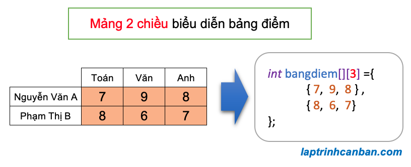

Cùng tìm hiểu về mảng 2 chiều trong C++. Bạn sẽ biết mảng 2 chiều là gì, cách khởi tạo và khai báo mảng 2 chiều, nhập và xuất mảng 2 chiều trong C++, cũng như cách sử dụng mảng char 2 chiều trong C++ sau bài học này.
Mảng 2 chiều là gì ?
Trong bài Mảng trong C++ là gì chúng ta đã biết mảng trong C++, hay còn gọi là kiểu mảng trong C++ là tập hợp các dữ liệu có cùng kiểu, và các dữ liệu chứa trong mảng được gọi là phần tử của mảng đó. Chúng ta không thể kết hợp các kiểu dữ liệu khác nhau trong cùng một mảng.
Mảng trong C++ được chia ra làm 2 loại, đó là mảng 1 chiều và mảng đa chiều. Trong đó chúng ta hay sử dụng loại mảng đa chiều nhiều nhất đó chính là mảng 2 chiều trong C++.
Trong ngôn ngữ C++, mảng 2 chiều là kiểu mảng chứa các mảng khác bên trong nó. Phần tử của mảng 2 chiều không được lưu giữ trực tiếp trong mảng 2 chiều, mà được lưu giữ thông qua các mảng 1 chiều bên trong mảng 2 chiều đó. Do cấu tạo mảng như vậy nên chúng ta mới gọi các mảng trong mảng như thế này là mảng 2 chiều.
Mỗi phần tử trong mảng 2 chiều cần được xác định bởi một cặp index (chỉ số) là [index dọc][index ngang], trong đó [index dọc] để xác vị trí của mảng 1 chiều chứa nó trong mảng 2 chiều, và [index ngang] để xác định vị trí của nó trong mảng 1 chiều chứa nó.
Ví dụ điển hình của mảng 2 chiều là bảng điểm dưới đây. Bảng điểm có 2 hàng tương ứng với số điểm của từng người, và trong mỗi hàng lại có 3 cột tương ứng với số điểm của từng môn. Khi biểu diễn bảng điểm thành mảng, mỗi một hàng trong bảng sẽ trở thành một mảng 1 chiều, và mỗi mảng 1 một chiều sẽ chứa tối đa 3 phần tử tương ứng với điểm số của từng môn như sau:

Để truy cập tới từng ô điểm trong bảng điểm, chúng ta cần biết ô đó thuộc hàng thứ mấy, và cột thứ mấy. Và khi chuyển bảng điểm thành mảng thì một cách tương tự, để truy cập tới các phần tử trong mảng 2 chiều, chúng ta cần biết phần tử đó thuộc mảng 1 chiều thứ bao nhiêu (tính từ trên xuống dưới), và vị trí của nó trong mảng 1 chiều đó (tính từ trái qua phải). Các vị trí này cũng được đánh số thứ tự tương tự như mảng 1 chiều, luôn bắt đầu bằng 0 và tăng dần 1 đơn vị.
Ví dụ, phần tử [9] thuộc mảng 1 chiều đầu tiên (index dọc bằng 0) và đứng thứ 2 trong mảng 1 chiều chứa nó (index ngang bằng 1). Do vậy, nó được xác định bởi cặp index là [0][1].
Mảng 2 chiều thường được sử dụng để biểu diễn và tính toán ma trận trong C++. Ngoài ra, các dữ liệu như “hình ảnh” và “cơ sở dữ liệu” sử dụng trong chương trình C++ đều là các dữ liệu được sắp xếp theo định dạng hai chiều, và chúng ta cũng cần phải sử dụng mảng 2 chiều để biểu diễn chúng.
Khai báo mảng 2 chiều trong C++
Để khai báo mảng 2 chiều trong C++, chúng ta cần quan tâm tới các thuộc tính của mảng cần khai báo sau đây:
- Kiểu dữ liệu: Phần tử trong mảng thuộc kiểu dữ liệu nào? Là int, char hay float? Xem thêm: Kiểu dữ liệu trong C++
- Tên mảng: tên của mảng để phân biệt nó với các đối tượng khác trong chương trình.
- Độ dài mảng (số phần tử): Mảng 2 chiều cần khai báo có bao nhiêu phần tử, cần chuẩn bị bao nhiêu chỗ để chứa nó trong bộ nhớ máy tính?
- Độ dài phần tử của mảng: Phần tử trong mảng 2 chiều có bao nhiêu phần tử con trong đó.
Và chúng ta sử dụng cú pháp sau đây để khai báo mảng 2 chiều:
type name[y][x];
Trong đó type là kiểu dữ liệu, name là tên mảng 2 chiều, y là số lượng mảng 1 chiều có trong mảng 2 chiều, còn x là độ dài(số phần tử con) của các mảng 1 chiều đó.. Lưu ý là chúng ta bắt buộc phải chỉ định các giá trị y và x khi khai báo mảng 2 chiều, để chương trình có thể tạo ra vùng có kích thước tương đương để lưu mảng 2 chiều này trong bộ nhớ máy tính.
Ví dụ cụ thể về cách khai báo mảng 2 chiều trong C++:
// Mảng 2 chiều kiểu int gồm 10 mảng 1 chiều |
Khởi tạo mảng 2 chiều trong C++
Để khởi tạo mảng 2 chiều trong C++, ngoài các thuộc tính khi khai báo mảng như ở trên thì chúng ta cần chỉ định thêm các phần tử là các mảng 1 chiều cách nhau bởi dấu phẩy, và nằm giữa cặp dấu {}, với cú pháp sau đây:
type name[y][x]= {{y1, x1}, {y2, x2}, {y3, x3}, ...};
Trong đó type là kiểu dữ liệu, name là tên mảng 2 chiều, y là số lượng mảng 1 chiều có trong mảng 2 chiều, còn x là độ dài(số phần tử con) của các mảng 1 chiều đó.
Khi tạo mảng 2 chiều bằng cách khởi tạo mảng trong C++, chúng ta có thể lược bỏ đi đối số y. Khi đó giá trị của y sẽ được tự động tính toán và bằng với chính độ dài của mảng. Khi đó cú pháp khởi tạo mảng rút gọn sẽ như sau:
type name[][x]= {{y1, x1}, {y2, x2}, {y3, x3}, ...};
Ví dụ cụ thể, chúng ta khai báo mảng [Bảng điểm] trong ví dụ ở phần định giới thiệu như sau:
int bangdiem[][3] = {{7, 9, 8 }, {8, 6, 7}} ; |
Lại nữa, để cho dễ nhìn hơn thì chúng ta cũng có thể tùy ý xuống dòng khi khởi tạo mảng 2 chiều như sau:
type name[][y]= {
{y1, x1},
{y2, x2},
{y3, x3},
...
};
Ví dụ cụ thể với một bảng điểm chứa nhiều phần tử hơn và khó biểu diễn hết trên 1 dòng lệnh:
int bangdiem[][3] = { |
Truy cập phần tử trong mảng 2 chiều
Sau khi đã khởi tạo một mảng 2 chiều, chúng ta có thể truy cập vào từng phần tử của mảng để lấy hoặc thay đổi giá trị, thông qua index của phần tử đó.
Mỗi phần tử trong mảng 2 chiều được xác định thông qua một cặp index là [index dọc][index ngang], trong đó [index dọc] để xác vị trí của mảng 1 chiều chứa nó trong mảng 2 chiều, và [index ngang] để xác định vị trí của nó trong mảng 1 chiều chứa nó.
Bằng cách viết tên mảng đằng trước, rồi sau đó chỉ định theo thứ tự [index dọc] và [index ngang] của phần tử vào trong cặp dấu ngoặc vuông [], chúng ta có thể truy cập phần tử trong mảng 2 chiều với cú pháp sau đây:
name[y][x]
Trong đó y là [index dọc] và x là [index ngang] của phần tử cần truy cập trong mảng name.
Sau khi truy cập phần tử trong mảng 2 chiều, chúng ta có thể lấy giá trị của nó, hoặc là gán giá trị mới và thay đổi giá trị ban đầu của nó.
Ví dụ, chúng ta lấy phần tử trong mảng 2 chiều, và thay đổi giá trị phần tử của mảng 2 chiều như sau:
|
Kết quả:
Phan tu [1][2]: 7 |
Nhập xuất mảng 2 chiều trong C++
Để nhập mảng 2 chiều trong C++, chúng ta cần sử dụng tới hàm cin >> để nhập dữ liệu từ bàn phím, và 1 vòng lặp for lồng để có thể chỉ định cặp index dọc và ngang của các phần tử, qua đó nhập và giá trị cho từng phần tử mảng 2 chiều.
Một cách tương tự thì để xuất mảng 2 chiều trong C++, chúng ta cần sử dụng tới hàm cout << để in giá trị, và 1 vòng lặp for lồng để có thể chỉ định cặp index dọc và ngang của các phần tử, qua đó truy cập và lấy giá trị của từng phần tử mảng 2 chiều.
Và dưới đây là chương trình nhập và xuất mảng 2 chiều trong C++:
|
Kết quả chương trình nhập và xuất mảng 2 chiều trong C++ như sau:
>>Nhap do dai (so mang 1 chieu) trong mang 2 chieu: 3 |
In mảng 2 chiều trong C++
Chúng ta có 2 cách để in mảng 2 chiều trong C++, đó là cách in từng phần tử thông qua index, và cách in toàn bộ phần tử trong mảng 2 chiều bằng vòng lặp for lồng.
in từng phần tử trong mảng 1 chiều
Trong trường hợp mảng 2 chiều có ít phần tử, hoặc là chúng ta chỉ muốn in ra một phần tử chỉ định nào đó, chúng ta có thể truy cập tới phần tử đó, lấy giá trị và in ra màn hình, thông qua việc chỉ định trực tiếp vị trí (index) của phần tử đó trong mảng.
Ví dụ cụ thể:
|
Kết quả:
a[0][0] = 7 |
in toàn bộ phần tử trong mảng 1 chiều
Cách thứ 2 để in mảng 1 chiều đó chính là sử dụng một vòng lặp for lồng (for trong for) để in toàn bộ phần tử trong mảng 2 chiều được chỉ định.
Trong trường hợp mảng 2 chiều chứa nhiều phần tử, và chúng ta không thể chỉ định và in từng phần tử của mảng, thì việc sử dụng vòng lặp for sẽ rất thuận tiện khi in mảng 2 chiều.
Lưu ý là với cách này thì chúng ta cần phải lấy kích thước (chiều ngang và chiều dọc) của mảng 2 chiều đã cho trước khi tiến hành vòng lặp, bằng các cách mà Kiyoshi đã hướng dẫn trong bài Lấy kích thước, độ dài và số phần tử trong mảng 2 chiều.
Ví dụ cụ thể:
|
Kết quả:
7 9 8 |
Mảng char 2 chiều trong C++
Ở phần trên chúng ta đã biết cách sử dụng mảng 2 chiều trong C++ để thao tác với các số trong bảng biểu rồi. Thực tế thì mảng 2 chiều thường được sử dụng để thao tác với tập hợp các số kiểu này, đặc biệt là trong ma trận, hoặc là với dữ liệu bảng biểu.
Tuy nhiên điều đó không có nghĩa là chúng ta không thể sử dụng mảng 2 chiều để làm việc với các kiểu dữ liệu khác, ví dụ như kiểu char, hoặc chuỗi ký tự trong C++.
Ví dụ, chúng ta có thể sử dụng mảng char 2 chiều trong C++ để lưu giữ các chuỗi ký tự trong mảng 2 chiều như sau:
|
Kết quả, các chuỗi ký tự trong mảng char 2 chiều được in ra như sau:
ABC |
Lưu ý, khi sử dụng mảng 2 chiều với số, chúng ta chỉ định độ dài mảng 1 chiều bằng chính số lượng các số chứa trong nó. Tuy nhiên khi sử dụng mảng 1 chiều để chứa chuỗi ký tự, cần lưu ý là trong một chuỗi ký tự, ngoài các ký tự tạo nên chuỗi thì trong chuỗi còn tồn tại cả ký tự kết thúc chuỗi \0 nữa, cho nên chúng ta cần chỉ định độ dài của các mảng 1 chiều phải đủ để chứa cả ký tự \0 này.
Ví dụ, chuỗi ABC dù chỉ nhìn thấy 3 ký tự, nhưng thực ra nó được tạo ra từ 4 ký tự là A, B, C++ và \0, cho nên chúng ta phải viết char s[][4] khi khai báo mảng char 2 chiều trong C++.
- Xem thêm: Mảng chuỗi 2 chiều trong C++
- Xem thêm: Chuỗi trong C++ là gì ? Cách khởi tạo, khai báo, gán và in chuỗi trong C++
Tổng kết
Trên đây Kiyoshi đã hướng dẫn bạn về mảng 2 chiều trong C++ rồi. Để nắm rõ nội dung bài học hơn, bạn hãy thực hành viết lại các ví dụ của ngày hôm nay nhé.
Và hãy cùng tìm hiểu những kiến thức sâu hơn về C++ trong các bài học tiếp theo.
URL Link
https://laptrinhcanban.com/cpp/lap-trinh-cpp-co-ban/mang-trong-cpp/mang-2-chieu-trong-cpp/
HOME › lập trình c++ cơ bản dành cho người mới học lập trình>>17. mảng trong c++